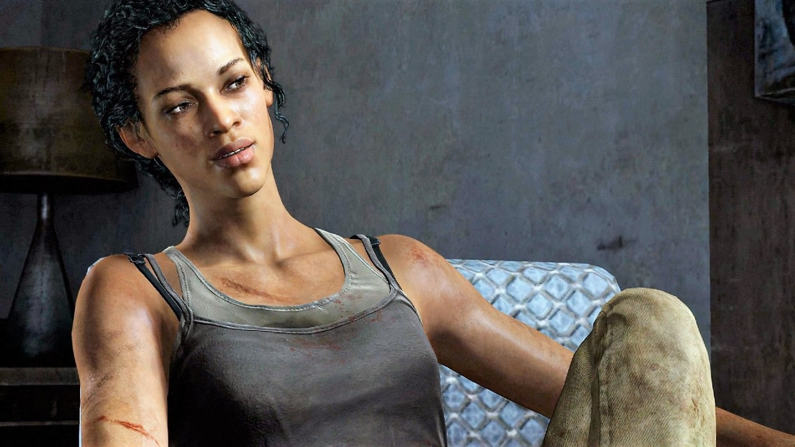
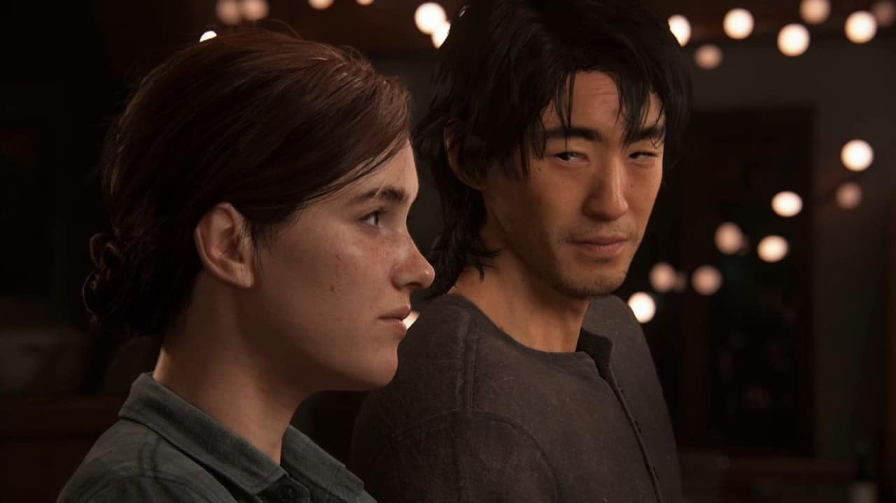

The Last of Us part 1 - Personagens
Joel
Joel Miller é um personagem fictício dos videogames The Last of Us e The Last of Us Part II da Naughty Dog . Nos jogos, ele é retratado por Troy Baker através de captura de movimento e dublagem ; na próxima adaptação para a televisão , ele será interpretado por Pedro Pascal . No primeiro jogo, Joel é o protagonista principal e tem a tarefa de escoltar a jovem Ellie pelos Estados Unidos pós-apocalípticos na tentativa de criar uma cura potencial para uma infecção à qual Ellie é imune. Ele também aparece brevemente no conteúdo para downloadcampanha The Last of Us: Left Behind . Joel é morto em The Last of Us Part II por uma mulher chamada Abby , cujo pai ele matou no primeiro jogo, levando Ellie a buscar vingança. Joel foi criado por Neil Druckmann , o diretor criativo e escritor de The Last of Us . O elenco do personagem foi extenso, pois seu relacionamento com Ellie era imperativo para o jogo; foi o foco central do desenvolvimento do primeiro jogo , com todos os outros elementos desenvolvidos em torno dele. Baker inspirou aspectos da personalidade de Joel, tornando o personagem mais emocional do que inicialmente proposto. Druckmann queria que os jogadores, especialmente os pais, se relacionassem com Joel através de seu vínculo com Ellie. Ele considerou o personagem moralmente complexo. Para a Parte II , Druckmann sentiu que o arco do personagem de Joel estava completo após o original, e sua morte foi uma parte central do desenvolvimento do jogo . O personagem foi bem recebido pela crítica; sua química com Ellie é um assunto frequente de elogios. A simpatia e complexidade do personagem também foi elogiada. O desempenho de Baker em ambos os jogos foi muito elogiado e recebeu inúmeros prêmios e indicações.
Ellie
Ellie Williams é a personagem central da série The Last of Us . Ela serve como personagem principal em The Last of Us: American Dreams , o deuteragonista jogável de The Last of Us , e a protagonista jogável de The Last of Us: Left Behind e The Last of Us Part II . Ellie cresceu como órfã na zona de quarentena de Boston e frequentou uma escola preparatória militar , onde conheceu e fez amizade com Riley Abel . Quando Ellie tinha quatorze anos, os dois foram infectados com a infecção cerebral por Cordyceps , onde Ellie descobriu que era imune. Uma amiga de sua mãe e líder dos Vaga- lumes , Marlene , acreditava que ela era a chave para a engenharia reversa de uma vacina. Marlene encarregou Joel Miller , um contrabandista , de escoltar Ellie para fora do QZ. A simples entrega se transformou em uma jornada de um ano pela América, e os dois eventualmente formaram um vínculo estreito. Ao chegar aos Vagalumes em Salt Lake City , Joel descobriu que apenas matar Ellie poderia criar a cura. Recusando-se a permitir isso, ele matou o cirurgião-chefe e escapou com Ellie para se estabelecer em Jackson , a comunidade de seu irmão em Wyoming . Nos cinco anos seguintes, Ellie se ressentiu de Joel por salvar sua vida. Em 2038 , Abby Anderson , ex-vaga-lume e filha do cirurgião, encontrou e matou Joel. Ellie jurou vingança e perseguiu Abby para Seattle . Seus esforços foram infrutíferos, levando-a a se aposentar em uma fazenda com sua namorada Dina e seu filho JJ. Incapaz de perdoar Abby, Ellie abandonou sua família e a perseguiu mais uma vez até Santa Bárbara , apenas para poupar Abby no final. Ela voltou para Jackson mais uma vez, aceitando a morte de Joel e sua decisão de salvar sua vida.
Sarah
Antes do surto, Sarah vivia uma vida cotidiana regular na área de Austin , Texas , com seu pai Joel. Ela estava em um time de futebol juvenil chamado "Defenders", jogando na posição número 14, e ganhou um prêmio individual em um jogo, como evidenciado por várias fotos em sua casa, especialmente uma dela e Joel juntos. Ela também gostava de caminhar com seu pai e andar de skate , como mostrado por um skate encostado na parede em seu quarto no início do jogo. Ela era fã da banda de rock "The Bash", tendo um pôster deles na parede do quarto. Ela também gostou dos filmes "Dawn of the Wolf", uma peça da saga Crepúsculo , como pode ser visto por um pôster em seu quarto. Está implícito que ela fez Joel levá-la para ver o filme. A mãe de Sarah e Joel foram casados "por um tempo" mas ela deixou Joel logo após o nascimento de Sarah.
Tommy
Tommy aparece pela primeira vez quando fala com seu irmão Joel ao telefone, discutindo o assunto do trabalho de Joel em arquitetura e empreiteiro, embora a conversa seja interrompida quando Joel desliga. Nas primeiras horas da manhã do dia seguinte, Sarah encontra o celular de Joel, encontrando uma mensagem de texto preocupada de Tommy perguntando "onde diabos você está? Ligue para mim!" e oito chamadas perdidas dele. Ele aparece pessoalmente durante as primeiras horas do surto de infecção cerebral por Cordyceps , pegando Joel e Sarah em sua casa para levá-los à segurança. Os três dirigem pela cidade com um plano para chegar ao bloqueio que os militares montaram. Eles testemunham ruas cheias de corredores recém- infectados , pessoas correndo com medo pelas ruas e incêndios envolvendo vários prédios. Depois de chegar à Texas State Highway 71, eles encontram um engarrafamento que se transforma em caos quando os infectados começam a atacar o carro na frente deles. Eles rapidamente se viram, perseguidos por vários infectados, e tentam um desvio. Em meio ao caos, um veículo bate na lateral do carro de Tommy. Todos eles sobrevivem ao acidente, mas a perna de Sarah está quebrada, fazendo com que Joel a carregue e Tommy para cobri-los com o revólver de Joel. Tommy consegue voltar para Joel e Sarah depois de serem separados em um bar, bem a tempo de salvar a vida de Joel de um soldado que se prepara para executá-lo, mas Sarah é baleada no abdômen. Enquanto Joel tenta aplicar pressão no ferimento de Sarah, ele olha para Tommy, que responde com um olhar incerto e nervoso. Logo, Sarah morre na frente do tio, nos braços do pai.
Tess
Tess é vista pela primeira vez quando ela entra no apartamento de Joel na Zona de Boston. Joel pergunta por que ela não esperou por ele quando foi trocar cartões de racionamento por pílulas no distrito de West End. Tess tenta acalmá-lo mostrando que ela conseguiu "cartões de racionamento suficientes para durar alguns meses". Joel não se diverte, perguntando por que ela tem um corte no rosto e tenta ajudar a limpá-lo com um pano embebido em álcool. Tess revela que foi atacada por "alguns ninguéns" enviados por Robert, outro contrabandista local que está atrasado em pagar-lhes uma quantidade considerável de armas. Ela fala com Joel e consegue convencê-lo de que eles podem recuperar seu esconderijo de armas roubadas, revelando que Robert está escondido em um "antigo armazém na Área 5". Os dois saem para encontrar Robert. Enquanto se dirigem ao posto de controle, eles discutem como as rações devem ser baixas e observam quatro pessoas serem forçadas a sair de um prédio para serem examinadas, com uma infectada. Eles quase passam pelo posto de controle, mas o grupo de milícia local, os Vaga-lumes, bombardeia um caminhão, levando os militares a fechar o posto de controle enquanto perseguem os terroristas. A dupla corre para dentro de um prédio. Joel foi ferido no ataque, então Tess lhe dá um kit de saúde para se consertar. Tess utiliza seus contatos impressionantes para escapar por uma rota subterrânea até o esconderijo de Robert. A dupla descobre que Marlene, a líder dos Vagalumes, também está procurando por Robert. Depois de relembrar de ter passado pelo mesmo caminho antes, eles vão para o subsolo e encontram a área cheia de esporos, fazendo com que eles usem máscaras respiratórias. Eles discutem quando sua próxima remessa com Bill está prevista e como Bill "sempre encontra alguma coisa", embora nem sempre seja bom. Tess um acordo a caminho, mas ela insiste que está ocupada. Ao atravessar um ônibus, um contrabandista fica no caminho de Joel. Os dois se encaram, mas Tess diz ao homem para se afastar, revelando que o cara é apenas "uma velha dor de cabeça". Ela encontra um homem guardando um portão, dando-lhe cartões de racionamento em troca de descobrir se Robert está na fábrica; ele é. Os dois se infiltram no complexo e descobrem que a equipe de segurança está mais preocupada com o destino de Robert caso Tess o encontre, em vez do mais formidável Joel. Robert aparentemente também não paga os homens há algum tempo. Eventualmente, eles alcançam Robert, que foge, apenas para ser rapidamente encurralado. Ele tenta jogar "Mr. Inocente" esperando que "não haja ressentimentos". Tess comenta sarcasticamente "nada" antes de quebrar o joelho com um cano de metal. Ela o interroga, fazendo Joel torturá-lo, forçando Robert a revelar que ele havia vendido suas armas para os vaga-lumes. Tess fica muito irritada com isso, tendo Joel quebrando o braço antes de atirar nele impiedosamente. Os dois seguem em frente, Joel perguntando "e agora?". Tess comenta que eles precisam encontrar um Firefly. Momentos depois, uma Marlene ferida aparece e faz um acordo com Tess e Joel - se eles contrabandearem algo para fora da cidade, ela lhes devolverá suas armas, o dobro do que Robert lhes devia. Quando Tess, Joel e Marlene chegam ao esconderijo de Marlene, eles conhecem Ellie, uma garota de 14 anos que está sob a proteção de Marlene. Ellie deve ser levada por Joel e Tess para o Capitólio, nas profundezas da cidade. Uma vez lá, um grupo de vaga-lumes deve buscá-la, completando assim a missão de Tess e Joel. Tess e Joel concordam em contrabandear Ellie, embora Joel não esteja muito feliz com isso; seu relacionamento com Ellie é bastante tenso no início. Tess parece ser mais protetora com Ellie, assegurando-lhe que tudo ficará bem. O trio percorre a cidade, encontrando soldados e, eventualmente, sendo pego. Tess se oferece para suborná-los se eles os deixarem ir, mas antes que a conversa possa continuar, Ellie apunhala um dos soldados na perna. Joel então atira nele, enquanto Tess atira no outro soldado. Eles fogem para um arranha-céu abandonado e quase destruído, onde encontram Runners e Clickers. Juntos, eles saem, chegando mais perto de seu destino. Eles chegam a um museu onde Joel se separa de Tess e Ellie. Enquanto Joel avança, ele encontra Tess lutando contra um Runner, matando-o. Joel e Tess matam os corredores restantes no museu e seguem para o telhado. Depois de atravessar vários telhados, eles finalmente chegam ao Capitólio. No pátio, Ellie expressa sua gratidão por Marlene os selecionar, mesmo que eles sejam pagos para entregá-la ao prédio. Tess responde "Sim, com certeza". Quando Joel, Tess e Ellie entram no Capitólio, eles veem o grupo de Vaga-lumes que deveria se encontrar com eles mortos no saguão. Tess está determinada a tirar Ellie de Boston e entregá-la aos Vagalumes, mas Joel está relutante em fazê-lo. Enquanto Tess questiona Joel sobre o que ele realmente sabe sobre os Vagalumes e sobre ela, Ellie percebe que Tess está infectada (presumivelmente mordida em seu ombro pelo Corredor que ela estava lutando no museu). Tess implora a Joel para levar Ellie ao irmão de Joel e ex-Firefly, Tommy, nem mesmo tirando os olhos dele enquanto conversa com Ellie, pois sente que Joel é obrigado a fazê-lo. Quando os soldados chegam, Tess exige que Joel e Ellie continuem sem ela. Ela pode ficar para trás e ganhar tempo para escapar, e afirma que "não se transformará em uma dessas coisas". Joel quer lutar, mas ele é empurrado por Tess, dizendo-lhes para "simplesmente irem". Uma vez que a dupla sai, Tess fica emocionada, com lágrimas nos olhos enquanto ela se vira para enfrentar a ameaça que se aproxima. Enquanto Joel e Ellie escapam, eles ouvem Tess gritar enquanto ela é inevitavelmente dominada pelos tiros dos soldados. Antes de sua morte, ela conseguiu matar dois dos soldados. Joel também vê o corpo de Tess enquanto ele e Ellie escapam.
Marlene
Como Firefly, Marlene lutou contra o regime totalitário dos militares dentro das zonas de quarentena para restaurar uma forma de governo funcional. Os Fireflies foram bem sucedidos em derrubar o regime militar em várias zonas, nomeadamente Salt Lake City, mas seus esforços nem sempre alcançaram os resultados desejados, como em Pittsburgh . Apesar das tentativas dela e de sua organização de restaurar a ordem, seus números diminuíram quando os militares reprimiram e mataram membros encontrados nas zonas. Além de tudo isso, Marlene fez com que sua organização ficasse de olho em Ellie como parte de sua promessa a Anna, a mãe de Ellie de quem ela era amiga de longa data, mesmo antes do surto. Ela já foi próxima do irmão de Joel , Tommy , quando ele era um membro dos Fireflies. Depois de um tempo, porém, Tommy desistiu da causa e decidiu ir embora. Antes de sair, ele disse a Marlene que, se ela precisasse de alguma coisa, poderia contar com Joel para ajudá-la.
Bill
Antes do surto de infecção cerebral por Cordyceps , exceto que Bill obteve habilidades mecânicas em algum momento, pois é hábil em reparar veículos e construir coisas com sucatas. Ele também se adaptou ao novo mundo e se tornou um catador competente. Em algum momento antes de 2033, Bill e seu parceiro Frank eram os únicos sobreviventes que viviam em Lincoln, uma cidade povoada por um número incomumente grande de infectados . No entanto, em algum momento, Frank deixou Bill sozinho e desapareceu. Para se proteger dos infectados e dos caçadores , Bill construiu muitas barricadas e armadilhas. Ele também tinha um acordo de contrabando com Joel e Tess nas proximidades de Boston, contrabandeando suprimentos como comida, munição e, ocasionalmente, remédios para a zona de quarentena. No verão de 2033, Bill devia muitos favores a Joel, por razões desconhecidas.
Henry e Sam
Henry e seu irmão estavam entre os sobreviventes que deixaram Hartford, depois que os militares abandonaram a zona de quarentena. Por sugestão de alguém de seu grupo, eles entraram em Pittsburgh para procurar suprimentos e foram posteriormente emboscados pelos caçadores dentro da cidade. Antes de se separarem, o grupo concordou em se encontrar perto de uma torre de rádio fora dos limites da cidade. Nos dias seguintes, Henry e Sam se esconderam em um prédio de escritórios perto de um dos vigias dos caçadores. Henry e Sam estavam escondidos em um prédio de apartamentos quando encontraram Ellie e Joel . Assumindo que Joel era um caçador, Henry o atacou, ganhando uma vantagem momentânea antes que Ellie o cortasse com seu canivete. Distraído, ele não conseguiu se defender do contra-ataque de Joel e foi jogado no chão, onde Joel começou a socá-lo nos rins e na nuca. Ellie avisou seu parceiro sobre seu irmão mais novo, que tinha uma arma apontada para ele. Henry garantiu a seu irmão que eles não são “os bandidos” e Joel recuou, permitindo que Henry se recuperasse.
David
Após Ellie ter negociado medicamentos com David – para que pudesse tratar os ferimentos de Joel -, o personagem persegue a garota e a sequestra. Em seus aposentos, somos apresentados a uma população que tem sobrevivido comendo a carne de outros humanos.
The Last of Us part 2 - Personagens
O joel e a Ellie estão aqui também,eu não coloquei porque não achei relavante
Abby
 Filha de um cirurgião assassinado por Joel, Abby faz parte dos Lobos, um grupo militar com base em Washington. Ao lado de Manny e seus outros companheiros, ela sai de Seattle rumo a Jackson em busca de vingança.
Por mais que pareça uma antagonista para muitos, a interpretação do game coloca ela como uma das principais e mais marcantes personagens de The Last of Us mesmo que não tenha aparecido no início da narrativa.
Filha de um cirurgião assassinado por Joel, Abby faz parte dos Lobos, um grupo militar com base em Washington. Ao lado de Manny e seus outros companheiros, ela sai de Seattle rumo a Jackson em busca de vingança.
Por mais que pareça uma antagonista para muitos, a interpretação do game coloca ela como uma das principais e mais marcantes personagens de The Last of Us mesmo que não tenha aparecido no início da narrativa.
Dina
Dina é a namorada de Ellie e companheira da protagonista durante a sua busca por respostas. O final do game deixa um questionamento sobre o estado da relação das duas.
Jesse
Jesse, o ex-namorado de Dina, após os acontecimentos em Jackson participa de parte da busca por vingança de Ellie em Seattle. Apesar de pouco tempo de tela, é muito importante em determinados momentos da história.
Lev
 Depois de passar por uma transição de gênero, Lily passou a se chamar Lev. O irmão de Yara se desvencilhou do grupo dos Serafitas(ou Cicatrizes) após sua devota mãe lhe designar para um casamento. Reafirmando sua nova identidade, o ato causou indignação e ele foi exilado do bando.
Depois de passar por uma transição de gênero, Lily passou a se chamar Lev. O irmão de Yara se desvencilhou do grupo dos Serafitas(ou Cicatrizes) após sua devota mãe lhe designar para um casamento. Reafirmando sua nova identidade, o ato causou indignação e ele foi exilado do bando.
Yara
 Irmã de Lev, Yara seguiu o seu irmão após Lev ter sido exilado dos Serafitas. A dupla se junta à WLF (Lobos) e formam um vínculo que interfere diretamente no futuro da antagonista Abby.
Irmã de Lev, Yara seguiu o seu irmão após Lev ter sido exilado dos Serafitas. A dupla se junta à WLF (Lobos) e formam um vínculo que interfere diretamente no futuro da antagonista Abby.
Manny
 >Outro membro da Frente de Liberação de Washington, os Lobos, Manny é um dos principais aliados de Abby na trama de The Last of us Parte II.
>Outro membro da Frente de Liberação de Washington, os Lobos, Manny é um dos principais aliados de Abby na trama de The Last of us Parte II.
Mel
Uma médica treinada pelo pai de Abby, Mel também fez parte dos Vagalumes e se juntou à WLF. A personagem faz parte do grupo liderado pela antagonista e também participa da caça por vingança. No decorrer da história, ela mantém uma relação amorosa com Owen e fica grávida de seu companheiro.